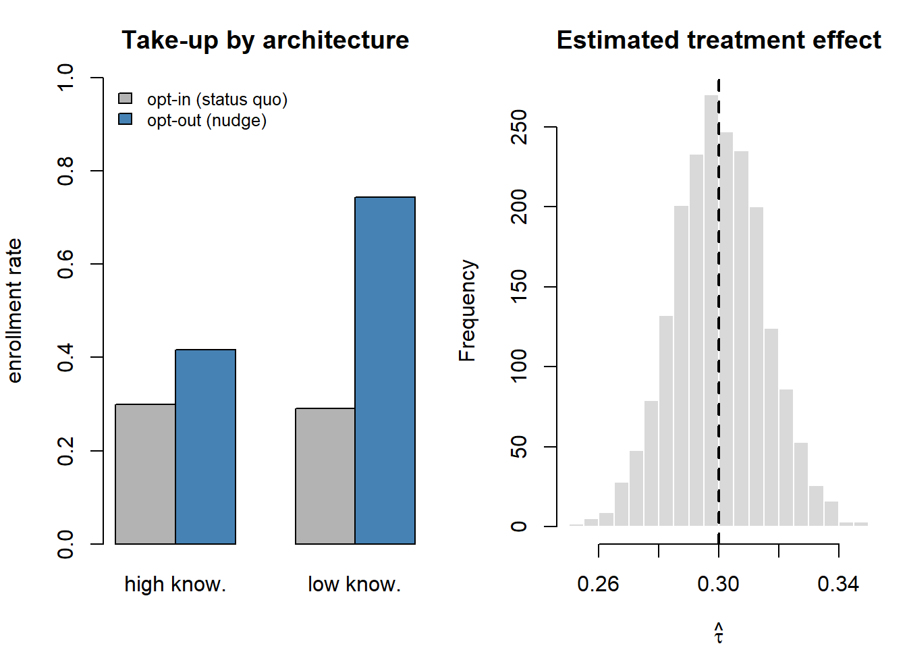

flowchart TD I["Intervention on a choice from<br/>menu C with attributes x_j<br/>and prices p_j"] --> PC["Price cut or<br/>quality improvement"] I --> BN["Ban"] I --> ND["Nudge"] PC --> PC2["Changes V through<br/>p_j or x_j:<br/>economic incentives"] BN --> BN2["Deletes option j<br/>from the menu C"] ND --> ND2["Adds γ·d_j(a):<br/>default status, list rank,<br/>salience weight"] ND2 --> ND3["Menu and prices intact;<br/>under neoclassical axioms γ = 0"]
19 Nudges and Choice Architecture
Every choice a consumer faces arrives wrapped in a context: an order in which options appear, a pre-checked box, a number printed on a label, a sentence that frames the same outcome as a gain or a loss. None of these features alters the underlying options, yet each reliably moves what people choose. A choice architect is anyone who organizes the context in which decisions are made—the designer of an enrollment form, the merchandiser who sets a shelf, the platform engineer who selects a default. A nudge is any aspect of that architecture that predictably changes behavior without forbidding options or materially changing economic incentives. The defining feature is that the intervention is cheap to avoid: a true nudge leaves the menu and the prices intact and works through how the choice is presented, not through what is on offer.
This chapter treats choice architecture as both a scientific object and a managerial instrument. Scientifically, nudges are where the behavioral-economics account of the consumer—bounded rationality, reference dependence, present bias, sensitivity to social information—meets the firm’s ability to engineer the environment. Commercially, the same levers that a public-health agency uses to raise organ-donor registration are the levers a retailer uses to raise basket size, and the line between a welfare-improving nudge and an exploitative “dark pattern” is drawn by whose objective the architecture serves. We therefore give equal weight to mechanism (why defaults, framing, social proof, and salience work), to measurement (how field experiments identify a nudge effect and what breaks that identification), and to ethics and welfare (when steering a chooser is legitimate). By the end the reader should be able to formalize a nudge as a shift in a choice model, design a field test that recovers its causal effect, and reason explicitly about the welfare claim that justifies it.
The intellectual debt is to the heuristics-and-biases program—the systematic departures from expected-utility maximization catalogued by A. Tversky and Kahneman (1974) and A. Tversky and Kahneman (1981)—and to the reference-dependent account of value in R. Thaler (1985). The managerial program that builds on it, libertarian paternalism, holds that because choices are never presented context-free, the architect cannot avoid influencing behavior; the only question is whether that influence is exercised thoughtfully and in the chooser’s interest.1 We adopt that framing while treating the welfare claim as something to be argued, not assumed.
19.1 Theoretical Foundations
Choice architecture has no force of its own; it works only because human choice departs from the rational-agent benchmark in regular, theorized ways. The governing lens is behavioral economics, and each core lever in this chapter is a deployment of a specific behavioral-economic theory. Naming those theories makes the mechanism explicit and the welfare argument auditable.
The foundation is prospect theory (Kahneman and Tversky 1979; A. Tversky and Kahneman 1981). People evaluate outcomes as gains and losses relative to a reference point, with a value function that is steeper for losses than for equivalent gains. This single idea underwrites two levers at once. It explains framing: relabeling the reference point (the “90% lean” versus “10% fat” contrast) changes valuation even though the final state is identical, because the loss-averse chooser is not invariant to the reference the way a final-wealth maximizer would be. It also explains the stickiness of defaults through status-quo bias, the riskless-choice form of reference dependence in which moving away from the inherited option registers as a loss and is therefore resisted (Amos Tversky and Kahneman 1991). The endowment effect (willingness to accept exceeding willingness to pay) is the same asymmetry seen from the side of ownership, and it is why a default, once held, feels costly to surrender.
Three further behavioral-economic theories complete the account. Mental accounting (R. Thaler 1985) holds that consumers code outcomes into separate, non-fungible cognitive accounts, so the partitioning and framing of a cost (an installment versus a lump sum, a fee versus a base price) changes evaluation even when the net economics are unchanged. Salience theory (Bordalo, Gennaioli, and Shleifer 2013) formalizes limited attention: decision weights are distorted toward whatever stands out in the choice context, which is exactly the primitive a salience nudge perturbs (a calorie label, a conspicuous fee). And present bias, the hyperbolic-discounting result that near-term outcomes are over-weighted relative to the long term (Laibson 1997), explains why people under-save, procrastinate cancellation, and impulse-buy: it is the time-preference failure that automatic enrollment and commitment-style nudges are designed to correct. Social norms supply the final primitive: descriptive and injunctive norms move behavior, often more than people predict, which is the engine of every social-proof nudge (Cialdini, Reno, and Kallgren 1990; Goldstein, Cialdini, and Griskevicius 2008).
These theories are organized into a managerial program by libertarian paternalism, the framing introduced in Thaler and Sunstein’s Nudge: because choice is never presented context-free, the architect cannot avoid influencing behavior, so the only question is whether that influence is exercised thoughtfully and in the chooser’s interest. The program’s empirical credibility rests on field evidence that defaults and reminders change behavior cheaply at scale (Johnson and Goldstein 2003; Benartzi et al. 2017). Its critics press two objections. The first is normative: the paternalism is real, and the “libertarian” promise of a free opt-out is partly illusory wherever exiting carries even small friction, the concern formalized as sludge, the welfare-reducing mirror of a nudge (R. H. Thaler 2018). The second is empirical: meta-analytic re-readings argue that average nudge effects are smaller and more publication-biased than the headline cases suggest, so the intervention should be sized honestly rather than oversold. We adopt the libertarian-paternalism framing while treating both the welfare claim and the effect size as quantities to be argued and measured, not assumed; Section 19.5 and Section 19.6 take up each in turn.
19.2 What a Nudge Is, Formally
Intuitively, a nudge changes behavior without changing the rational consumer’s problem. To make this precise, consider a chooser selecting from a menu \(\mathcal{C} = \{1,\dots,J\}\) of options, each with attributes \(\mathbf{x}_j\) and price \(p_j\). In the standard random-utility model the chooser selects option \(j\) when its latent utility is largest, \[ U_j = V(\mathbf{x}_j, p_j) + \varepsilon_j, \qquad j^\star = \arg\max_{j \in \mathcal{C}} U_j , \tag{19.1}\] with \(V\) the deterministic (systematic) component and \(\varepsilon_j\) an idiosyncratic shock. A price cut or a quality improvement moves choices by changing \(V\) through \(p_j\) or \(\mathbf{x}_j\). A ban moves choices by deleting \(j\) from \(\mathcal{C}\). A nudge does neither. It is a feature \(a\) of the choice architecture that enters utility (or the choice rule) without changing the menu \(\mathcal{C}\) or the economic terms \((\mathbf{x}_j, p_j)\): \[ \tilde U_j = V(\mathbf{x}_j, p_j) + \gamma\, d_j(a) + \varepsilon_j , \tag{19.2}\] where \(d_j(a)\) encodes how architecture \(a\) touches option \(j\)—an indicator that \(j\) is the default, the rank of \(j\) in a list, the salience weight on \(j\)’s price—and \(\gamma\) is the behavioral sensitivity. Under the neoclassical axioms \(\gamma = 0\): presentation is irrelevant and choice is invariant to anything but \((\mathbf{x}_j, p_j)\). Every nudge is, in this notation, a claim that \(\gamma \neq 0\) for some architecture-dependent term that a fully rational agent would ignore. Figure 19.1 locates the nudge among the interventions available to anyone who shapes a choice: it alone moves behavior while leaving both the menu and the economic terms intact.
A nudge is any aspect of the choice architecture that alters people’s behavior in a predictable way without forbidding any options or significantly changing their economic incentives. To count as a mere nudge, the intervention must be easy and cheap to avoid.
— after the standard definition in the libertarian-paternalism literature
Two corollaries follow and discipline the rest of the chapter. First, because the nudge operates through \(\gamma\, d_j(a)\) rather than through preferences, its effect is a property of the interaction between the architecture and the population’s behavioral parameters—the same default can be inert in one segment and decisive in another (Section 19.4). Second, the welfare evaluation of a nudge cannot be read off revealed choice in the usual way: if \(\gamma \neq 0\), the option chosen under architecture \(a\) need not be the one that maximizes the chooser’s experienced utility, so the architect must invoke a welfare criterion external to the choice itself (Section 19.5).
It is useful to separate two channels by which \(d_j(a)\) can act, because they imply different robustness and different ethics. A nudge may supply information or structure that a rational but cognitively limited agent would want—reducing search cost, correcting a misperception, making a consequence vivid—in which case it moves choice toward what the agent would pick on reflection. Or it may exploit a bias—anchoring on an arbitrary number, triggering loss aversion, leveraging inertia—in which case it moves choice toward what the architect wants regardless of the chooser’s interest. The same formal object, \(\gamma\, d_j(a)\), covers both; the welfare sign is not in the math but in the mapping from the manipulated choice to the chooser’s own ends.
Even within the bias-exploiting channel, force is not guaranteed. The arbitrary-number anchoring that folklore treats as universal is, across fifty years of evidence, among the weakest forms: meta-analyzing more than 2,600 effect sizes, Schley and Weingarten (2026) find that incidental and random-number anchors show much smaller and sometimes null effects once incentives or debiasing enter, while informative anchors stay robust (Hedges’ \(g \approx 0.83\)). Naming a mechanism does not certify that a nudge will move anyone—an empirical caution the boundary-conditions discussion later in the chapter develops.
19.3 The Core Levers
Four families of nudge recur across domains because each maps onto a robust regularity in how people depart from Equation 19.1. Table 19.1 organizes them by the behavioral primitive each exploits, the formal object it perturbs, and the canonical field application. We then treat each in turn.
| Lever | Behavioral primitive | What it perturbs in Equation 19.2 | Canonical application |
|---|---|---|---|
| Default | Status-quo bias, inertia, effort cost | Sets \(d_j(a)=1\) for the opt-out option | Auto-enrollment in retirement saving; organ donation |
| Framing | Reference dependence, loss aversion | Relabels the reference point in \(V\) | “90% lean” vs. “10% fat”; gain/loss appeals |
| Social proof | Conformity, descriptive norms | Adds a term in others’ choices to \(V\) | “Most guests reuse their towels”; energy reports |
| Salience | Limited attention, fluency | Reweights an attribute already in \(V\) | Calorie labels; “sale” tags; traffic-light nutrition |
19.3.1 Defaults
A default is the outcome that obtains when the chooser does nothing. Defaults are the most powerful nudge because doing nothing is the cheapest action: any positive cost of deliberation, comprehension, or execution makes the pre-set option disproportionately likely to stand. Formally, let the chooser realize the default \(j_0\) unless she pays an idiosyncratic switching cost \(c_i\) to move, choosing to switch only when the utility gain exceeds that cost, \[ \Pr(\text{switch from } j_0 \text{ to } j) = \Pr\!\big(U_{ij} - U_{ij_0} > c_i\big). \tag{19.3}\] When \(c_i\) is small the default barely matters; when \(c_i\) is large—or when the chooser never engages the comparison at all because attention is itself costly—the default captures nearly the whole market. Three forces inflate the effective \(c_i\): inertia (status-quo bias, an instance of loss aversion in which moving away from the reference point registers as a loss), implied endorsement (the chooser reads the default as the architect’s recommendation), and effort (comprehending and executing a change has real cognitive and procedural cost). The celebrated cross-country contrast in organ-donor rates—near universal registration under opt-out regimes, sparse registration under opt-in, holding stated attitudes roughly constant—is the limiting case in which \(c_i\) dominates the modest utility difference between registering and not (Johnson and Goldstein 2003). Figure 19.2 traces the process by which the pre-set option becomes the outcome.
flowchart TD
J0["Default j0 pre-set:<br/>obtains if the chooser<br/>does nothing"] --> AT{"Does the chooser engage<br/>the comparison at all?<br/>(attention is costly)"}
AT -->|"no"| ST["Default stands"]
AT -->|"yes"| SW{"Utility gain from switching<br/>greater than cost c_i?"}
SW -->|"no"| ST
SW -->|"yes"| MV["Chooser switches to j"]
F1["Inertia:<br/>status-quo bias,<br/>loss aversion"] --> CI["Forces that inflate c_i"]
F2["Implied endorsement:<br/>default read as the<br/>architect's recommendation"] --> CI
F3["Effort:<br/>cognitive and<br/>procedural cost"] --> CI
CI -.-> SW
The same mechanism drives the marquee result in household finance: automatic enrollment in defined-contribution retirement plans raises participation sharply and persistently, because the inattentive employee inherits the saving rate and fund the plan sets rather than the one she would choose on reflection. Madrian and Shea (2001) document the magnitude: switching a plan default from opt-in to opt-out raised participation from roughly half to more than four-fifths, with most enrollees then anchored on the default contribution rate and fund. R. H. Thaler and Benartzi (2004) turn the same insight into a designed instrument, pre-committing employees to raise contributions out of future raises. That defaults can remedy under-saving is non-trivial precisely because under-saving is itself partly a behavioral failure: Garbinsky, Mead, and Gregg (2020) show that many people save too little not from rational impatience but from a positive illusion of financial responsibility—they believe themselves more financially responsible than the average person, and that flattering self-view dampens the felt need to save. A default that raises the saving rate works with the grain of what these consumers would, on reflection, endorse, which is part of why it is defensible on welfare grounds.
Defaults are not uniformly benign. The identical inertia that lifts retirement saving also sustains negative-option marketing: a free trial that silently converts to a paid subscription, or a pre-checked add-on at checkout, harvests the same \(c_i\) for the firm’s benefit rather than the chooser’s. The welfare sign of a default thus depends entirely on whether the pre-set option is the one the chooser would choose with full attention—a question the architecture is designed to prevent her from confronting.
19.3.2 Framing
A frame is a description of options that is logically equivalent across versions but psychologically distinct. Framing effects are the direct empirical signature of the reference dependence in prospect theory: because the value function is defined over gains and losses relative to a reference point rather than over final states, and is steeper for losses than for equivalent gains, the same outcome described as a loss looms larger than when described as a gain (A. Tversky and Kahneman 1981; R. Thaler 1985). Write the chooser’s valuation as reference-dependent, \[ V_j = v\!\big(\mathbf{x}_j - \mathbf{r}\big), \qquad v'(z) > 0,\quad v''(z) < 0 \text{ for } z>0,\quad v'(0^-) > v'(0^+), \tag{19.4}\] where \(\mathbf{r}\) is the reference point and the last inequality—the kink at zero—is loss aversion. A frame is an intervention on \(\mathbf{r}\): describing ground beef as “90% lean” sets the reference at the favorable attribute, while “10% fat” sets it at the unfavorable one, even though the product is identical. The neoclassical chooser, valuing final states, is invariant to \(\mathbf{r}\) and hence to the frame; the loss-averse chooser is not.
Framing pervades marketing communication. Attribute frames recolor evaluation of a fixed product; goal frames cast the same action as avoiding a loss or securing a gain, with loss frames typically more motivating for prevention behaviors. The “buy now, pay later” (BNPL) instrument studied by Maesen and Ang (2024) is, in part, a framing device: splitting a price into interest-free installments reframes the reference point for the expenditure, and the authors show with retailer transaction data (in a difference-in-differences design around BNPL introduction) and three preregistered experiments that the installment frame reduces perceived financial constraint and perceived cost and improves felt budget control, raising both purchase incidence and basket size relative to lump-sum payment. The effect is concentrated among smaller-basket and credit-reliant shoppers—evidence that the frame bites hardest where the behavioral primitive (here, narrow bracketing of the payment) is strongest, and a reminder that a frame that “helps” budget control can simultaneously raise spending in a way the chooser may not, on reflection, endorse.
19.3.4 Salience
A salience nudge changes which attribute the chooser attends to, without changing the attribute set or the prices. Limited attention means the chooser behaves as if maximizing a distorted utility that overweights whatever is perceptually or cognitively prominent. Let attention weights \(\omega_k \ge 0\) multiply the attributes, \[ \hat V_j = \sum_{k} \omega_k\, \beta_k\, x_{jk}, \qquad \omega_k = \omega_k(\text{salience of attribute } k), \tag{19.6}\] so that a fully attentive chooser has \(\omega_k \equiv 1\) and recovers Equation 19.1, while an inattentive one sets \(\omega_k\) near zero on neglected attributes (a tax not shown at the shelf, a shrouded fee) and above one on prominent ones (a bold “sale” tag, a traffic-light nutrition label). A salience nudge is an intervention on \(\omega_k\): posting calorie counts raises the weight on the health attribute; displaying tax-inclusive prices raises the weight on the true price. Crucially—and unlike framing—a salience nudge can be welfare-improving precisely because it pushes \(\omega_k\) back toward one, undoing a distortion the chooser would not endorse, rather than introducing a new one.
The clean identification of salience effects comes from settings where the information is unchanged but its prominence varies: making an already-disclosed fee conspicuous, or an already-available calorie figure visible at the point of choice, changes behavior even though a rational agent had access to the number all along. Payment form is the canonical demonstration: holding the amount fixed, Soman (2003) shows that more transparent payment mechanisms — those that make the outflow perceptually vivid — depress subsequent spending, which is a pure \(\omega_k\) intervention on an unchanged budget constraint. The same machinery explains why a cost labelled a tax is resisted more than an identical cost labelled a fee or a price (Sussman and Olivola 2011): the label changes the weight, not the arithmetic, which makes it a framing effect with genuine distributional consequences for policy design. Salience is also the lens through which to read “decoy” and assortment effects in Chapter 20 and Chapter 43: adding a dominated option or reordering a shelf reweights attention across an unchanged menu.
19.4 Heterogeneity, Distribution, and the Equity of Nudging
Because a nudge acts through \(\gamma\, d_j(a)\) rather than through preferences, its effect is intrinsically heterogeneous: it is largest for the choosers whose behavioral parameters make them most susceptible and smallest for those who would choose deliberately regardless. This is not a nuisance to be averaged away; it is the policy-relevant heart of the matter, because it determines who a nudge moves and therefore its distributional consequences.
Mrkva et al. (2021) establish this directly: choice-architecture interventions—defaults, attribute ordering, partitioning—have systematically larger effects on consumers with lower socioeconomic status, lower numeracy, and lower domain knowledge. The mechanism is the susceptibility logic above: those with less knowledge or numerical fluency engage the deliberate comparison less and so inherit the architecture more. The distributional implication cuts two ways. A welfare-improving default (auto-enrollment in saving, a healthier cafeteria arrangement) disproportionately helps the disadvantaged and can narrow the gap that arises when the savvy navigate complex choices and the rest default into bad ones. The very same asymmetry means an exploitative architecture disproportionately harms the disadvantaged. Heterogeneity is thus an amplifier whose sign is set by the architect’s objective, and a nudge’s equity case rests on aligning that objective with the interests of the most susceptible.
This connects to the welfare argument that follows: the standard libertarian defense—“opting out is free, so no one is worse off”—is weakest exactly where the nudge is strongest, because the populations least likely to opt out are the least-resourced. The freedom to opt out is not equally distributed.
19.5 Welfare and Ethics
Evaluating a nudge requires a welfare criterion, and revealed preference cannot supply one when \(\gamma \neq 0\). If the architecture itself moves choice, then the chosen option is no longer a clean signal of what the chooser values, and the analyst cannot infer “she chose it, therefore it made her better off.” The behavioral-welfare-economics response is to define welfare relative to the chooser’s preferences as they would be absent the manipulating frame—what she would choose with full attention, no inertia, and a neutral reference point—and to judge a nudge by whether it moves actual choice toward that as-if-rational benchmark. A nudge that closes the gap between distorted and undistorted choice is welfare-improving; one that opens it is not. The difficulty, and it is genuine, is that the undistorted benchmark is partly a construct of the analyst, not an observable.
Three principles operationalize the criterion and double as design tests. First, preserve and cheapen opt-out: the libertarian half of the program is honored only if exiting the default carries trivial cost, and—per Section 19.4—trivial for the least-resourced chooser, not merely for the analyst. Second, publicity: a nudge is more likely legitimate if the architect would be willing to defend it openly to those nudged; covert exploitation of a bias fails this test where transparent information provision passes it. Third, interest alignment: ask whether \(d_j(a)\) steers toward the chooser’s own ends (saving, health, accurate prices) or the architect’s (subscription revenue, larger baskets). The BNPL frame in Maesen and Ang (2024) is instructive here—it improves felt budget control while raising spending, so its welfare sign depends on whether the additional purchases are ones the consumer would endorse on reflection or ones the frame extracts by narrowing attention to the installment.
The adversarial twin of the nudge is the dark pattern: a choice-architecture device engineered to serve the firm at the chooser’s expense—pre-checked add-ons, buried unsubscribe links, drip-priced fees, confirmshaming, manufactured scarcity. Dark patterns are nudges that fail all three tests at once: opt-out is made costly, the design would not survive disclosure, and it steers against the chooser’s interest. The privacy literature documents the analogous machinery in data collection. Adjerid, Acquisti, and Loewenstein (2019) show that consumers’ privacy choices are malleable to framing and to subtle changes in how options are presented, and that the same misdirection that depresses privacy-protective choice can be reversed; Acquisti, John, and Loewenstein (2012) demonstrate that the control a platform appears to grant over disclosure is itself a lever—paradoxically, giving people more nominal control over publication can increase their willingness to disclose sensitive information, a control-as-nudge that benefits the data collector. These are the welfare hard cases: architecture that feels empowering while steering against the chooser’s privacy interest.
Figure 19.3 summarizes the decision the architect actually faces: not whether to architect—context is unavoidable—but whether the architecture they cannot help imposing is aimed at the chooser’s ends or their own.
flowchart TD
A[Choice architecture<br/>γ·d_j a ≠ 0] --> B{Is opt-out cheap<br/>for the least-resourced chooser?}
B -- No --> D[Dark pattern]
B -- Yes --> C{Would the design<br/>survive public disclosure?}
C -- No --> D
C -- Yes --> E{Does it steer toward the<br/>chooser's ends or the architect's?}
E -- Architect's --> D
E -- Chooser's --> F[Welfare-improving nudge]
D --> G[Reject / regulate]
F --> H[Deploy and audit]
19.6 Identifying a Nudge Effect in the Field
A nudge is a causal claim—\(\gamma \neq 0\) for a specific \(d_j(a)\)—and the gold standard for recovering \(\gamma\) is the randomized field experiment, because laboratory framing effects routinely shrink or vanish under real stakes, deliberation, and repetition. The estimand is the average treatment effect of architecture \(a\) on the choice of interest. With chooser \(i\) randomized to the nudge (\(T_i=1\)) or the status-quo architecture (\(T_i=0\)), and outcome \(Y_i\) (e.g., enrollment, basket size, the share choosing the target option), \[ \tau = \mathbb{E}[Y_i \mid T_i = 1] - \mathbb{E}[Y_i \mid T_i = 0], \tag{19.7}\] identified under randomization by the independence of \(T_i\) from potential outcomes. The estimator is the difference in means (or a regression of \(Y_i\) on \(T_i\) with pre-treatment covariates to soak up residual variance); its assumptions are (i) successful randomization, so treatment is orthogonal to potential outcomes; (ii) the stable-unit-treatment-value assumption (SUTVA)—no interference between units—which a social-proof nudge can threaten precisely because it operates through peers; and (iii) no differential attrition between arms. What breaks identification: spillovers (the nudged and un-nudged talk, or share a shelf), non-compliance (the default is overridden administratively), and outcome measures that capture short-run novelty rather than persistent behavior. The persistence question is first-order for defaults, whose entire value rests on inertia lasting; a one-week bump that decays is not the same asset as auto-enrollment that compounds for decades.
When randomization is infeasible because the nudge is rolled out to everyone at once, the workhorse is difference-in-differences (DiD), exactly the design Maesen and Ang (2024) use around the introduction of BNPL. For unit \(i\) in period \(t\), \[ Y_{it} = \alpha_i + \delta_t + \beta\, (\text{Post}_t \times \text{Treated}_i) + \mathbf{z}_{it}^\top\boldsymbol{\gamma} + \varepsilon_{it}, \tag{19.8}\] where \(\alpha_i\) are unit fixed effects, \(\delta_t\) time fixed effects, and \(\beta\) the nudge effect. DiD identifies \(\beta\) under parallel trends: absent the nudge, treated and control units would have moved in parallel. That assumption fails if the nudge is rolled out because the treated group was already trending differently (selection on trends), if a contemporaneous shock hits one group only, or if treatment timing is staggered and effects are heterogeneous across cohorts—the last a now-well-understood pitfall in two-way-fixed-effects estimation. The credible applications buttress parallel trends with pre-period event-study coefficients (flat pre-trends) and placebo outcomes that the nudge should not move. Figure 19.4 summarizes the two identification paths and the assumptions each must defend.
flowchart TD
CL["Causal claim: γ ≠ 0 for<br/>a specific architecture d_j(a)"] --> RQ{"Can assignment to the<br/>architecture be randomized?"}
RQ -->|"yes"| RCT["Randomized field experiment:<br/>ATE by difference in means"]
RQ -->|"no: rolled out to<br/>everyone at once"| DID["Difference-in-differences<br/>around the rollout"]
RCT --> RA["Must hold: randomization,<br/>SUTVA, no differential attrition"]
RA --> RB["Breaks: spillovers (social proof),<br/>overridden defaults,<br/>novelty-only outcomes"]
DID --> PA["Must hold: parallel trends"]
PA --> PB["Defend with flat pre-trends<br/>(event study) and<br/>placebo outcomes"]
RB --> PS["Measure persistence:<br/>a default's value pays<br/>only if inertia endures"]
PB --> PS
The simulation below makes the design concrete and reproducible. We generate a default nudge with a known true effect, embed realistic heterogeneity (the nudge bites harder on low-knowledge choosers, per Mrkva et al. (2021)), and recover the treatment effect by the Equation 19.7 estimator. Figure 19.5 reports the resulting enrollment rates and the sampling distribution of the estimated effect.
Code
set.seed(16)
simulate_nudge_trial <- function(n = 4000,
base_enroll = 0.30, # opt-in baseline take-up
tau_low = 0.45, # nudge effect, low-knowledge
tau_high = 0.15) { # nudge effect, high-knowledge
# Half the sample is low domain knowledge (more susceptible per Mrkva 2021).
low_knowledge <- rbinom(n, 1, 0.5)
treat <- rbinom(n, 1, 0.5) # randomized opt-out default
tau_i <- ifelse(low_knowledge == 1, tau_low, tau_high)
# Enrollment probability is the baseline plus the (heterogeneous) nudge bump.
p <- pmin(base_enroll + treat * tau_i, 0.99)
enroll <- rbinom(n, 1, p)
data.frame(enroll, treat, low_knowledge)
}
dat <- simulate_nudge_trial()
# Difference-in-means estimator of the ATE (eq-ate).
ate_hat <- mean(dat$enroll[dat$treat == 1]) - mean(dat$enroll[dat$treat == 0])
# Subgroup effects to expose heterogeneity.
sub <- aggregate(enroll ~ treat + low_knowledge, dat, mean)
# Sampling distribution of the estimator across replications.
reps <- replicate(2000, {
d <- simulate_nudge_trial()
mean(d$enroll[d$treat == 1]) - mean(d$enroll[d$treat == 0])
})
true_ate <- 0.5 * 0.45 + 0.5 * 0.15 # population-average true effect
op <- par(mfrow = c(1, 2), mar = c(4, 4, 3, 1))
# Panel 1: enrollment by architecture and knowledge.
bar_mat <- matrix(sub$enroll[order(sub$low_knowledge, sub$treat)],
nrow = 2,
dimnames = list(c("opt-in", "opt-out"),
c("high know.", "low know.")))
barplot(bar_mat, beside = TRUE, ylim = c(0, 1),
col = c("grey70", "steelblue"),
ylab = "enrollment rate", main = "Take-up by architecture")
legend("topleft", c("opt-in (status quo)", "opt-out (nudge)"),
fill = c("grey70", "steelblue"), bty = "n", cex = 0.8)
# Panel 2: sampling distribution of the estimated ATE.
hist(reps, breaks = 30, col = "grey85", border = "white",
xlab = expression(hat(tau)), main = "Estimated treatment effect")
abline(v = true_ate, lty = 2, lwd = 2)
par(op)
cat("Estimated ATE (single trial): ", round(ate_hat, 3), "\n")
#> Estimated ATE (single trial): 0.292
cat("True population ATE: ", round(true_ate, 3), "\n")
#> True population ATE: 0.3
The recovered effect lands on the true population average, and the subgroup panel reproduces the Mrkva et al. (2021) pattern: the same default moves low-knowledge choosers roughly three times as much as high-knowledge ones, the heterogeneity that drives both the equity case and the exploitation risk. Two practical lessons generalize. First, power the experiment for the subgroups that motivate the policy, not just the pooled effect, because the distributional claim is usually the point. Second, measure persistence: re-run the outcome at a horizon long enough to distinguish a durable behavior change from a novelty response, since a default’s value is an annuity that only pays if the inertia endures.
19.7 Pitfalls and Boundary Conditions
Nudges are neither free nor reliably small, and a disciplined account closes with where they fail. Effects decay and are context-bound. A frame that works in one population, at one stake level, with one reference point, often shrinks under real consequences or familiarity; the field-versus-lab gap is the single most common reason a promising laboratory nudge disappoints at scale, which is why Section 19.6 insists on field randomization and persistence measurement rather than one-shot lab demonstrations.
Nudges interact, sometimes destructively. Stacking a default, a social-proof message, and a salience cue is not additive: a descriptive norm can boomerang against above-average performers even as it lifts the rest (Cialdini, Reno, and Kallgren 1990), and a salience nudge that raises attention to one attribute necessarily lowers the relative weight on others (Equation 19.6), so “more salient labels” can crowd out the very dimension a second nudge was meant to promote. The architect optimizes a system of weights, not a list of independent levers.
Reactance and distrust. A nudge perceived as manipulation can trigger reactance, reversing the intended effect and eroding trust in the architect—a risk that scales with how covert the steering is and that the publicity test in Section 19.5 is designed to forestall. Crowding-out of intrinsic motivation is the subtler cousin: a nudge that does the deliberating for the chooser may atrophy the capacity to choose well unaided, a cost invisible in the short-run outcome metric but real over a consumer’s lifetime of decisions. The same reversal reaches explicit incentives, not just presentation: in a natural field experiment, surprise bonuses lowered subsequent effort, the payment read as a signal that the employer was already satisfied rather than a gift to be reciprocated (Bogliacino, Grimalda, and Pipke 2026)—a reminder that an intervention’s effect turns on the meaning the recipient assigns it, not on its size or sign alone.
Finally, the measurement of welfare remains the binding constraint. Because the undistorted benchmark in Section 19.5 is partly constructed by the analyst, two honest researchers can disagree about a nudge’s sign even given the same effect estimate. The responsible posture is to make the welfare model explicit—state the assumed reference preference, justify it, and report the effect on the susceptible subgroups separately—rather than to let an impressive average treatment effect stand in for a welfare argument it cannot make.
19.8 Key Takeaways
- A nudge changes behavior through the choice architecture (\(\gamma\, d_j(a)\) in Equation 19.2) without altering the menu or the economic terms; under the neoclassical axioms \(\gamma = 0\), so every nudge is a claim that presentation matters where a rational agent would ignore it.
- The four core levers map onto distinct behavioral primitives: defaults exploit inertia (Equation 19.3), framing exploits reference dependence and loss aversion (Equation 19.4), social proof exploits descriptive norms (Equation 19.5), and salience exploits limited attention (Equation 19.6).
- Nudge effects are intrinsically heterogeneous and largest for low-SES, low-numeracy, low-knowledge choosers (Mrkva et al. 2021), so a nudge’s distributional sign is set by the architect’s objective—amplifying help or harm alike.
- Welfare cannot be read off revealed choice when \(\gamma \neq 0\); legitimacy turns on cheap opt-out, surviving public disclosure, and alignment with the chooser’s own ends. Dark patterns are nudges that fail all three.
- Identifying \(\gamma\) in the field means a randomized experiment (Equation 19.7) or a parallel-trends DiD (Equation 19.8), powered for the susceptible subgroups and measured for persistence, not novelty.
19.9 Further Reading
The reference-dependence and heuristics foundations are Kahneman and Tversky (1979), A. Tversky and Kahneman (1974), A. Tversky and Kahneman (1981), Amos Tversky and Kahneman (1991), and R. Thaler (1985); salience and present bias are Bordalo, Gennaioli, and Shleifer (2013) and Laibson (1997); the normative social-influence machinery is Cialdini, Reno, and Kallgren (1990) and Goldstein, Cialdini, and Griskevicius (2008). The choice-architecture program rests on the default evidence of Johnson and Goldstein (2003), the scale evidence of Benartzi et al. (2017), and the sludge counterpoint of R. H. Thaler (2018) (the Nudge monograph of Thaler and Sunstein states the libertarian-paternalism framing in full). For frontier field and behavioral evidence weave the saving-illusion result of Garbinsky, Mead, and Gregg (2020), the choice-architecture-and-inequity result of Mrkva et al. (2021), the BNPL framing evidence of Maesen and Ang (2024), and the privacy choice-architecture work of Adjerid, Acquisti, and Loewenstein (2019) and Acquisti, John, and Loewenstein (2012). The construct connects forward to assortment and decoy effects in Chapter 43, price framing in Chapter 20, and the social-evaluation evidence in Chapter 11.
Acquisti, Alessandro, Leslie K John, and George Loewenstein. 2012. “The Impact of Relative Standards on the Propensity to Disclose.” Journal of Marketing Research 49 (2): 160–74.
Adjerid, Idris, Alessandro Acquisti, and George Loewenstein. 2019. “Choice Architecture, Framing, and Cascaded Privacy Choices.” Management Science 65 (5): 2267–90.
Benartzi, Shlomo, John Beshears, Katherine L. Milkman, Cass R. Sunstein, Richard H. Thaler, Maya Shankar, Will Tucker-Ray, William J. Congdon, and Steven Galing. 2017. “Should Governments Invest More in Nudging?” Psychological Science 28 (8): 1041–55. https://doi.org/10.1177/0956797617702501.
Bogliacino, Francesco, Gianluca Grimalda, and David Pipke. 2026. “No Gifts Returned: Surprise Bonuses Reduce Productivity in a Natural Field Experiment.” Management Science 72 (7): 5528–43. https://doi.org/10.1287/mnsc.2022.04085.
Bordalo, Pedro, Nicola Gennaioli, and Andrei Shleifer. 2013. “Salience and Consumer Choice.” Journal of Political Economy 121 (5): 803–43. https://doi.org/10.1086/673885.
Cialdini, Robert B., Raymond R. Reno, and Carl A. Kallgren. 1990. “A Focus Theory of Normative Conduct: Recycling the Concept of Norms to Reduce Littering in Public Places.” Journal of Personality and Social Psychology 58 (6): 1015–26. https://doi.org/10.1037/0022-3514.58.6.1015.
Garbinsky, Emily N., Nicole L. Mead, and Daniel Gregg. 2020. “EXPRESS: Popping the Positive Illusion of Financial Responsibility Can Increase Personal Savings: Applications in Emerging and Western Markets.” Journal of Marketing, November, 002224292097964. https://doi.org/10.1177/0022242920979647.
Goldstein, Noah J., Robert B. Cialdini, and Vladas Griskevicius. 2008. “A Room with a Viewpoint: Using Social Norms to Motivate Environmental Conservation in Hotels.” Journal of Consumer Research 35 (3): 472–82. https://doi.org/10.1086/586910.
Johnson, Eric J., and Daniel Goldstein. 2003. “Do Defaults Save Lives?” Science 302 (5649): 1338–39. https://doi.org/10.1126/science.1091721.
Kahneman, Daniel, and Amos Tversky. 1979. “Prospect Theory: An Analysis of Decision Under Risk.” Econometrica 47 (2): 263–91. https://doi.org/10.2307/1914185.
Laibson, David. 1997. “Golden Eggs and Hyperbolic Discounting.” The Quarterly Journal of Economics 112 (2): 443–78. https://doi.org/10.1162/003355397555253.
Madrian, B. C., and D. F. Shea. 2001. “The Power of Suggestion: Inertia in 401(k) Participation and Savings Behavior.” The Quarterly Journal of Economics 116 (4): 1149–87. https://doi.org/10.1162/003355301753265543.
Maesen, S, and D Ang. 2024. “Buy Now Pay Later: Impact of Installment Payments on Customer Purchases.” Journal of Marketing.
Mrkva, Kellen, Nathaniel A. Posner, Crystal Reeck, and Eric J. Johnson. 2021. “EXPRESS: Do Nudges Reduce Disparities? Choice Architecture Compensates for Low Consumer Knowledge.” Journal of Marketing, January, 002224292199318. https://doi.org/10.1177/0022242921993186.
Schley, Dan R., and Evan Weingarten. 2026. “Fifty Years of Anchoring Effects: A Theoretical Reintegration and Meta-Analysis.” Management Science. https://doi.org/10.1287/mnsc.2023.03238.
Schultz, P. Wesley, Jessica M. Nolan, Robert B. Cialdini, Noah J. Goldstein, and Vladas Griskevicius. 2007. “The Constructive, Destructive, and Reconstructive Power of Social Norms.” Psychological Science 18 (5): 429–34. https://doi.org/10.1111/j.1467-9280.2007.01917.x.
Soman, Dilip. 2003. “The Effect of Payment Transparency on Consumption: Quasi-Experiments from the Field.” Marketing Letters 14 (3): 173–83. https://doi.org/10.1023/a:1027444717586.
Sussman, Abigail B., and Christopher Y. Olivola. 2011. “Axe the Tax: Taxes Are Disliked More Than Equivalent Costs.” Journal of Marketing Research 48 (SPL): S91–101. https://doi.org/10.1509/jmkr.48.spl.s91.
Thaler, Richard. 1985. “Mental Accounting and Consumer Choice.” Marketing Science 4 (3): 199–214. https://doi.org/10.1287/mksc.4.3.199.
Thaler, Richard H. 2018. “Nudge, Not Sludge.” Science 361 (6401): 431. https://doi.org/10.1126/science.aau9241.
Thaler, Richard H., and Shlomo Benartzi. 2004. “Save More Tomorrow: Using Behavioral Economics to Increase Employee Saving.” Journal of Political Economy 112 (S1): S164–87. https://doi.org/10.1086/380085.
Tversky, A., and D. Kahneman. 1974. “Judgment Under Uncertainty: Heuristics and Biases.” Science 185 (4157): 1124–31. https://doi.org/10.1126/science.185.4157.1124.
Tversky, A, and D Kahneman. 1981. “The Framing of Decisions and the Psychology of Choice.” Science 211 (4481): 453–58. https://doi.org/10.1126/science.7455683.
Tversky, Amos, and Daniel Kahneman. 1991. “Loss Aversion in Riskless Choice: A Reference-Dependent Model.” The Quarterly Journal of Economics 106 (4): 1039–61. https://doi.org/10.2307/2937956.
The phrase is deliberately paradoxical: libertarian because options are preserved and opting out is free; paternalistic because the architect arranges the default to steer the inattentive chooser toward what the architect judges better for them. Critics argue the paternalism is real and the libertarianism partly illusory whenever opting out carries even small frictions—a tension we return to in Section 19.5.↩︎
19.3.3 Social Proof
A social-proof nudge supplies information about what others do, exploiting the human tendency to treat peers’ behavior as evidence about the correct or acceptable action—a descriptive norm. The mechanism adds a term in others’ choices to systematic utility, \[ V_{ij} = V_0(\mathbf{x}_j, p_j) + \theta\, s_{j} , \tag{19.5}\] where \(s_{j}\) is the (perceived) share of relevant others choosing \(j\) and \(\theta\) the conformity weight. Two cautions are built into the construct. First, the reference group matters: norms move behavior most when the comparison others are similar or proximate, so a generic “most people” appeal is weaker than one keyed to the chooser’s own group (Cialdini, Reno, and Kallgren 1990). Second, a descriptive norm can backfire. Telling people that an undesirable behavior is common normalizes it, dragging the below-average performer up but pulling the above-average performer down toward the mean—the boomerang effect—which is why effective normative interventions pair the descriptive norm with an injunctive cue (social approval or disapproval) that protects already-good performers (Cialdini, Reno, and Kallgren 1990). The household energy reports that print a neighbor comparison alongside a smiley face for low users are the canonical field deployment of exactly this descriptive-plus-injunctive design. Schultz et al. (2007) first showed why the injunctive component is not decorative: a purely descriptive norm pulls below-average households down as well as above-average households up, and only the added approval signal prevents that boomerang. Allcott (2011) replicates the design at scale across 600,000 households and finds durable reductions of about two percent.
Social proof also operates through observation of others in the moment of consumption rather than through reported statistics: the mere revealed presence of other consumers, and the composition of that crowd, shifts evaluations and choices, a continuity with the brand-evaluation evidence on virtual supporters discussed in Chapter 11. The lever’s power and its fragility share a root: because it works by transmitting what is normal, it is only as good as the honesty and relevance of the norm it transmits.